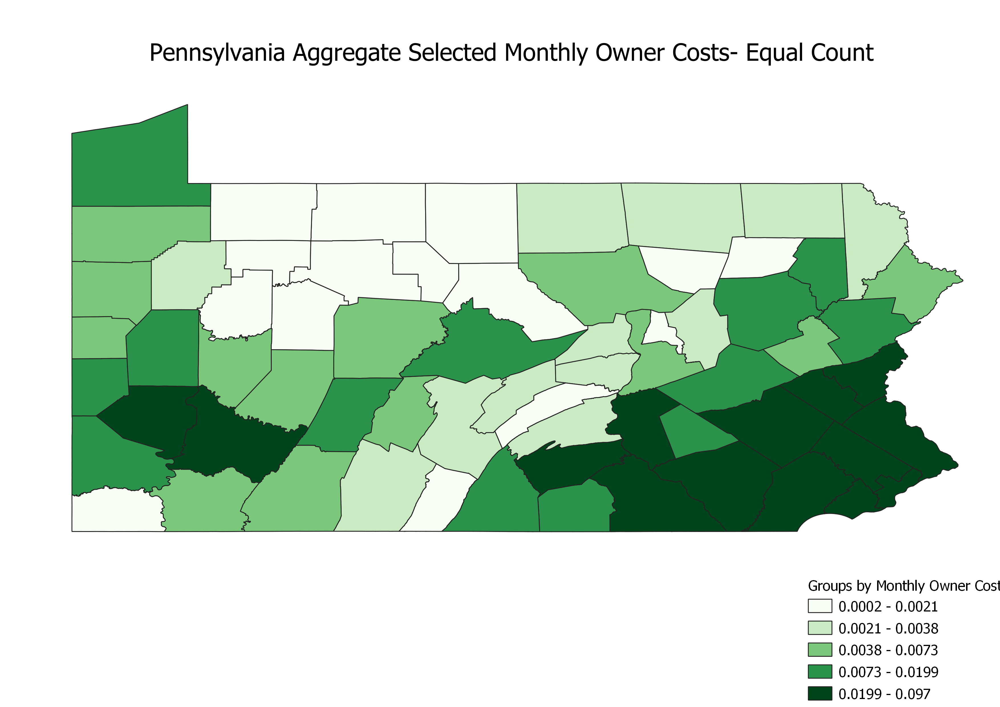
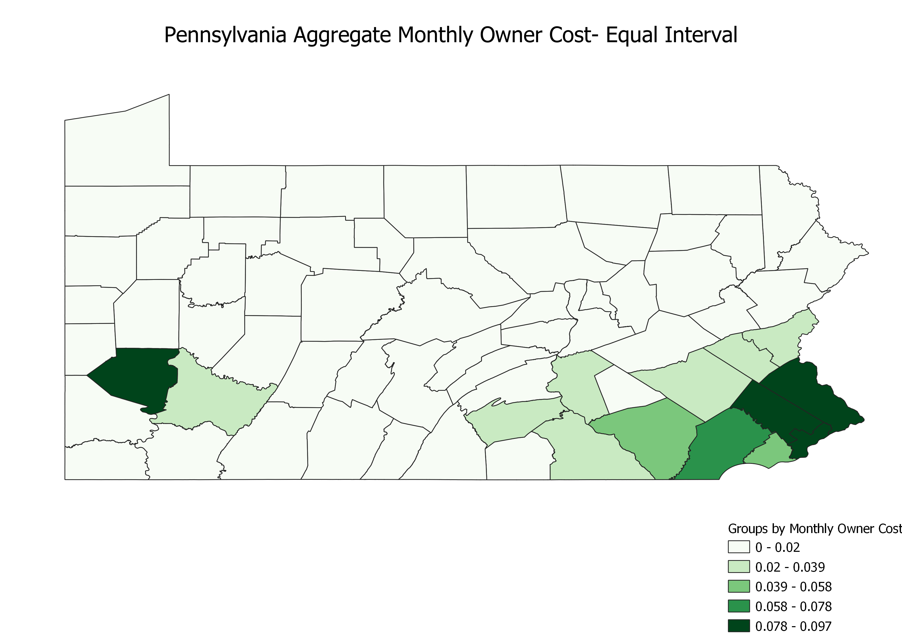
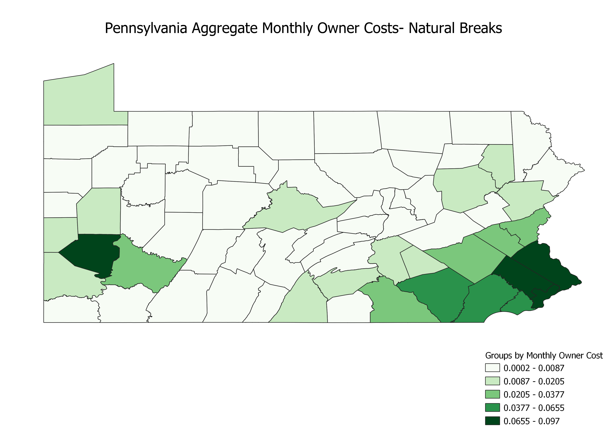

Homework 6: Census data choropleth
Jason Kennedy
This is a map of the aggregate monthly owner costs in Pennsylvania, I believe in 2021. My map is split up by county, so each county is a different color based on the aggregate monthly owner cost. In simple terms, the aggregate monthly owner cost is the total amount of money spent on housing (mortgage, deeds, insurance, etc.) per month in each county.

Data used for this project
CSV dataset
Link to shapefile
Vector file as geoJSON in 4326
Homework 6 Part 2
This is a map of the aggregate monthly owner costs in Pennsylvania again, but this time I changed the mode of the choropleth to equal count so there would be a more colorful map. While it is visually appealing, this kind of map doesn't accurately group counties because some counties are grouped with ones with drastically different values.

This is a map of the aggregate monthly owner costs in Pennsylvania again, but this time I changed the mode of the choropleth to equal interval so the difference between one color and the next would be equal. While this is better with skewed data, the dataset I used had many values in the first color range (white), so the map ended up not being very useful or visually appealing.

This is a map of the aggregate monthly owner costs in Pennsylvania again, but this time I changed the mode of the choropleth to natural breaks to make a balance between the previous two modes. While it is more visually appealing than the equal interval map, there are still mostly white counties. Because of this, I can conclude that defining natural breaks works when there are natural breaks, but otherwise it can lead to arbitrary color intervals.
